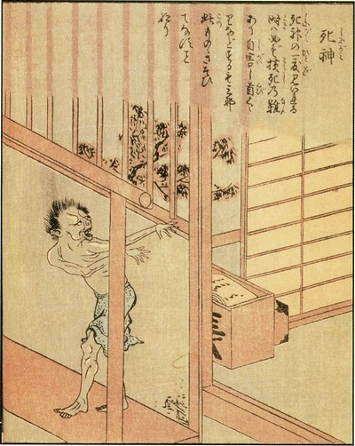

Live Like a Corpse
How acceptance of death set the samurai free
Miyamoto Musashi.
A samurai turned Buddhist monk
In the year 1700 Nabeshima Mitsushige, daimyo (lord) of the Saga domain, passed away. Yamamoto Jōchō, one of his samurai retainers, claims to have intuitively sensed his impending doom. From Kyoto, he rushed home: just in time to witness Mitsushige’s final moments. The death of the daimyo marked the end of Jōchō’s service.
He stated a desire to die with his lord by committing junshi: ritual suicide by self-immolation. This might, to say the least, strike us as a peculiar retirement plan. But at the time, it was held to be a supreme expression of loyalty. Still, his fellow clansmen intervened. Junshi was too radical even for the samurai of the Edo period and outlawed by both the Saga domain and the Tokugawa government.
Thus, Jōchō became a Buddhist monk instead. In the hills of Kurotsuchibaru, he would spend the rest of his life as a hermit. There, perhaps inadvertently, he became one of history’s most influential martial philosophers.
Ten years after he took the tonsure, a young samurai by the name of Tashiro Tsuramoto sought his council. The two developed a relationship of tutelage. Jōchō taught him his views on Budo: the Way of the warrior, or martial philosophy.

A rhetoric of slowness and speed has been used by philosophers since the ancient periods to characterise and assess different ways of life.
Hidden by Leaves
Tsuramoto documented the doctrine over the course of seven years, in a work that would later be titled Hagakure: either translated into Hidden Leaves or Hidden by Leaves. The text only reached the public after the Meiji restoration of 1868. During the twentieth century, it was popularized by the Japanese ultranationalists. They used it as a propaganda tool: a reactionary attempt to instill the warrior spirit of old into their modern military.
Japanese war propaganda.
Unfortunately, the radicalism in Hagakure has led to much atrocity.
It produced fanatics: soldiers ready to die for their country, who simultaneously bore no respect for opponents who were not. The former culminated in the suicidal kamikaze units. The latter in the sadistic prisoner camps erected across the Pacific.
Japanese martial philosophy has thus been mythologized to nefarious ends, but that does not mean it has nothing to teach well-adjusted individuals. Hagakure was first and foremost a commentary on the Way of the warrior. It attempts to capture a noble existence in the face of adversity. And although the average Westerner is not a military person, to each of us life still proves a battle from time to time.
Death and the Way
The most well-known quote from the book is as follows:
The Way of the warrior is to be found in dying.
This is directly followed by:
If one is faced with two options of life or death, simply settle for death. It is not an especially difficult choice; just go forth and meet it confidently.
And later:
If you miss the mark and you live to tell the tale, then you are a coward.
These are rather casual statements on a burdensome subject. They may be taken in two ways. One morbidly banal; the other, strangely uplifting. One could assume Jōchō means that the death of oneself or another is under no circumstances a tragedy. From there, a disregard for human life naturally follows. This view, in part, accounts for the crimes of the Second World War.
But it might also be interpreted as follows: Death, or fear thereof, should never impede a human being from living righteously. If indeed the end is nigh and our back is against the wall, we mustn’t betray our principles to continue living. After all, if we sacrifice our higher aim what is existence still worth?
To the samurai, death acted as a source of salvation. Seppuku (ritual suicide by disembowelment) served as a social mechanism either to prevent the loss of honor, or to restore it after betrayal thereof. Such bloody practices have no legitimate place in modern society, but it might be equally unwise to pretend the shinigami (death spirit) never comes for us.
The legendary swordsman Miyamoto Musashi (1548-1645) wrote:
You may leave your body, but you must maintain your honor.

Depiction of a shinigami.
Modern humans not rarely deny their own mortality. Unconsciously, however, they know death is looming. Anyone who pretends it does not exist thus denies a part of themselves. Jōchō’s death maxim steers one in the opposite direction: Life is finite and must therefore be lived as best as possible in the here and now. When stuck between death or sacrificing the greater good, one must always choose death.
He spoke:
Only when you constantly live as though already a corpse (jōjū shinimi) will you be able to find freedom in the martial Way, and fulfill your duties without fault throughout your life.
According to Jōchō, the Way is to be found in dying, because only acceptance of death can keep us from straying from our life’s journey. It is a paradoxically beautiful message. Death comes for us all, and it is therefore impossible to go through life without embracing said truth.
Although not all samurai actively fought, their way of life was inextricably tied to war, and therefore death. Samurai means “servant”. In order to serve well, they had to be willing to make the ultimate sacrifice to their lord. Thus, they were expected to prioritize honor over life itself.

What is especially intriguing for students of eremitism is the intimate interplay of personal motives and philosophical commitments behind Nanavira’s decision to live alone.
Budo and its influences
Although according to some succinctly captured in Hagakure, Budo originally had no formal code. It originated from custom. Since feudal times, the warrior was at the center of Japanese culture. In the 12th century, this culture became enriched by Zen Buddhism.
Rinzai, a school of Zen Buddhism, aided the samurai in reducing their fear of death. The warriors were not quite as interested in the spiritual element. But once they found it could enhance their martial ability, they practiced it intensively. In Buddhism, one finds an attitude towards death which reemerges in Jōchō’s outlook.
Buddha himself spoke:
[…] of all mindfulness meditation, that on death is supreme.
Buddhaghosa, a fifth-century Buddhist philosopher, wrote:
Perception of impermanence grows in him […] While beings who have not developed [mindfulness of] death fall victims to fear, horror and confusion at the time of death […] he dies undeluded and fearless without falling into any such state.
Buddhagosa presenting his teachings.
Jōchō spoke:
Every morning, be sure to meditate yourself into a trance of death.
The warrior, in his most challenging hour, is surrounded by mortal threats. In order to act correctly he must – as Buddhaghosa describes – remain “undeluded and fearless” in the face of danger. Panic is not an option. Maranasati (translated: mindfulness of death) meditations helped the samurai achieve a lucid understanding of their own mortality. This allowed them to keep cool in times of crisis.
The leaves on the cherry blossom
They were by no means suicidal, but simply embraced that life is like the leaves on the cherry blossom: cherished, yet frail. Death, sooner or later, comes for us all. By reconciling with our mortal nature, we unify with death. Hence Jōchō’s metaphor: “living like a corpse”.
Cherry blossoms.
Buddhism teaches one not to cling to things. Those who take nothing for granted – including life itself – receive blessings with gratitude and setbacks with indifference. Therefrom results a gentle kind of altruism. The samurai were supposed to serve. They put their lord, their clan, and their domain before themselves. Even if it killed them. Death, in the sense of its embrace, so delivered them a good life – for as long as it lasted.
Musashi was a ronin and thus served no master, but he too wrote:
Think lightly of yourself and deeply of the world.
Your ad-blocker ate the form? Just click here to subscribe!
Are modern humans like the samurai?
To the warriors of the Edo period, the good life was equivalent to the Way of the warrior. Fortunately for us, modern humans have a wider array of interests. (Although the samurai with their poems, paintings, and calligraphy were by no means unidimensional.)
Painting by Miyamoto Musashi.
Still, we have things in common. To us too, the pursuit of meaning is accompanied by risk. Risk implies the possibility of disaster. For fear of losing it, modern life often is never lived. The samurai, either consciously or in practice, solved this problem by staring death down. We, however, are tempted to look away. We neglect the unlivedness of our lives until fate comes knocking. But whether we realize our dreams or not, the end will come.
Jōchō’s lesson, that the good life may only be lived once one is ready to die for it, is therefore relevant now as it ever was. Our wealth and security are blessings, but they obscure the plain fact of our mortality. Long as it may be, if we forsake life’s meaning, there is no longer a reason to continue.
Memento mori hence, might as well lead us to carpe diem.
◊ ◊ ◊

Daan H. Teer on Daily Philosophy: